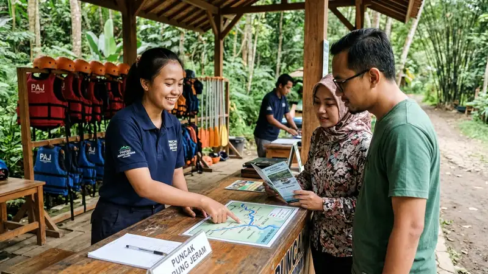

Memilih operator rafting di Malang dilakukan dengan membandingkan rute, durasi, fasilitas, rasio pemandu, transparansi biaya, dan ulasan peserta, bukan hanya harga paket termurah.
- Bandingkan paket dengan parameter yang sama agar penilaian adil.
- Biaya dipengaruhi rute, jumlah peserta, fasilitas, transportasi, dan musim.
- Minta rincian isi paket secara tertulis sebelum membayar.
- Baca ulasan dari banyak sumber dan perhatikan konsistensinya.
- Pastikan kebijakan pembatalan saat cuaca buruk jelas.
Parameter Apa yang Perlu Dibandingkan?
Bandingkan panjang rute, tingkat kesulitan arus, durasi di sungai, jumlah pemandu, kondisi perahu, dan fasilitas pendukung agar penilaian paket lebih adil dan terukur.
Tingkat kesulitan dapat dinilai dengan skala enam kelas dari American Whitewater, standar yang dipublikasikan hingga 2025. Tanyakan kelas arus rute yang ditawarkan agar sesuai pengalaman rombongan.
Rasio pemandu terhadap perahu dan kondisi alat berkaitan langsung dengan keselamatan. Untuk pembahasan teknisnya, baca panduan keselamatan rafting di Malang.
Buat tabel sederhana berisi operator, rute, durasi, fasilitas, dan biaya. Dengan format yang sama, perbedaan antar paket lebih mudah terlihat.
Apa yang Memengaruhi Biaya Paket Rafting?
Biaya paket rafting dipengaruhi panjang rute, jumlah peserta, fasilitas seperti makan dan dokumentasi, transportasi, serta musim kunjungan, sehingga angkanya dapat bervariasi antar operator.
Rute yang lebih panjang dan membutuhkan lebih banyak pemandu umumnya berbiaya lebih tinggi. Paket rombongan besar kadang memiliki skema berbeda dari paket individu.
Musim liburan dapat memengaruhi ketersediaan dan tarif. Tanyakan apakah ada perbedaan harga untuk hari kerja dan akhir pekan.
Hindari membandingkan harga tanpa membandingkan isi paket. Paket murah yang tidak mencakup fasilitas dasar bisa menjadi lebih mahal setelah ditambah biaya lain.
Fasilitas Apa yang Biasanya Termasuk dalam Paket?
Paket umumnya mencakup perahu, pelampung, helm, dayung, pemandu, dan pembilasan, sementara makan, dokumentasi, dan antar jemput dapat menjadi tambahan; pastikan lewat konfirmasi tertulis.
Fasilitas dasar keselamatan seharusnya selalu ada dalam paket. Jangan menerima paket yang meminta peserta membawa sendiri pelampung atau helm tanpa penjelasan jelas.
Tanyakan fasilitas pendukung seperti kamar bilas, loker, tempat ibadah, dan area parkir. Fasilitas ini memengaruhi kenyamanan, terutama bagi rombongan keluarga.
Simpan pesan atau dokumen konfirmasi yang memuat isi paket. Bila ada perbedaan di lokasi, Anda memiliki rujukan yang jelas.
Bagaimana Menilai Ulasan dan Reputasi Operator?
Nilai ulasan dengan membaca banyak sumber, memperhatikan konsistensi komentar tentang keselamatan dan pelayanan, serta waspada terhadap pujian generik atau ulasan yang terlalu seragam.
Cari komentar yang menjelaskan hal konkret, seperti kondisi alat, sikap pemandu, dan ketepatan jadwal. Komentar spesifik lebih berguna daripada pujian singkat.
Baca juga keluhan dan perhatikan bagaimana operator menanggapinya. Respons yang sopan dan menawarkan solusi menunjukkan pelayanan yang baik.
Gunakan ulasan sebagai salah satu masukan, bukan satu-satunya dasar. Tanyakan langsung kepada operator untuk memastikan informasi terbaru.
Bagaimana Proses Reservasi yang Baik?
Reservasi yang baik mencakup konfirmasi jadwal, jumlah peserta, ketentuan usia dan kesehatan, kebijakan pembatalan saat cuaca buruk, serta metode pembayaran yang jelas.
Sampaikan jumlah peserta, rentang usia, dan kebutuhan khusus sejak awal. Operator dapat menyesuaikan rute dan jumlah pemandu dengan informasi tersebut.
Tanyakan apa yang terjadi bila kegiatan ditunda karena hujan atau debit air naik. Pastikan Anda mengetahui apakah jadwal dapat diubah atau biaya dikembalikan.
Gunakan metode pembayaran yang dapat ditelusuri dan simpan bukti transaksi. Bacalah juga persiapan sebelum berangkat di panduan persiapan rafting di Malang.
Paket Grup, Keluarga, atau Perusahaan: Mana yang Sesuai?
Paket keluarga menekankan keamanan dan rute ringan, paket grup kantor menekankan kekompakan dan fasilitas, sedangkan peserta berpengalaman dapat mencari rute lebih menantang.
Keluarga dengan anak perlu memastikan batas usia dan memilih rute ringan. Rombongan kantor dapat menanyakan fasilitas tambahan seperti dokumentasi, ruang istirahat, dan kegiatan kebersamaan.
Peserta berpengalaman biasanya mencari rute dengan kelas arus lebih tinggi. Pastikan pemandu menilai kemampuan peserta sebelum memulai rute tersebut.
Apa pun jenis rombongannya, mulailah dari kebutuhan dan kemampuan peserta, lalu cocokkan dengan paket. Pembahasan umum tersedia di panduan Tantang Arus Rafting Malang.
FAQ
Apakah paket termurah selalu pilihan terbaik?
Tidak selalu. Bandingkan isi paket, keselamatan, dan fasilitas. Paket murah yang kurang lengkap dapat menimbulkan biaya tambahan atau mengurangi kenyamanan.
Perlu memesan berapa hari sebelumnya?
Waktu ideal bervariasi. Pada musim liburan atau rombongan besar, pesan lebih awal. Tanyakan batas waktu reservasi langsung kepada operator.
Bagaimana jika cuaca buruk pada hari rafting?
Operator dapat menunda atau membatalkan kegiatan demi keselamatan. Pastikan kebijakan penjadwalan ulang atau pengembalian dana dikonfirmasi sebelum Anda membayar.
Arya
penulis artikel yang sudah berpengalaman di dalam dunia wisata outbound Batu Malang.